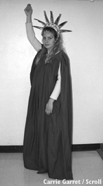

|
Patriotic Costumes: Halloween reflects the spirit of America
by Patricia Selman
sel00001@byui.edu
Scroll Staff

 |
| Nina Mangus, a sophomore from Richmond, Va., plans on haunting as the Lady of Liberty this Halloween. |
|
The original orange and black of Halloween has been invaded by red, white and blue. Is it Halloween or the Fourth of July?
Walking through the Kimball Administration Building, students can see cardboard cutouts of black cats, jack-o-lanterns made out of construction paper, and ... red, white and blue ribbons tied around U.S. flags.
Many people have noticed that patriotism has escalated because of the Sept. 11 attacks and President Bush’s declaration of war against terrorism.
“It is great how our nation has become united. Out of bad things good things can happen,” Benjamin Watts, a sophomore from Denver, Colo., said referring to the newly acquired allegiance to our country and the loss of the Trade Center and attack on the Pentagon.
Halloween is the first major holiday since the attacks, and there is evidence that the patriotism is going to carry over and become a part of the holiday this year.
The Web site www.buycostumes.com features a “Stars & Stripes” page which gives patriotic costume ideas. They include a Texas cowboy, the Statue of Liberty, an astronaut, a G.I. Joe commando, a policeman, a firefighter, Uncle Sam, a pilgrim and many more.
“Ever since [the attacks], patriotism has been a major part of our school,” Rex Miller, principal of Archer and Lyman elementary schools and resident of Rexburg, said.
There has been a focus on the Pledge of Allegiance and an increase of flag ceremonies, Miller said.
Rexburg elementary schools have had a red, white and blue day where the children were asked to show their patriotism by dressing in the colors of their nation. Their Red Ribbon Week, which promotes drug awareness, had already been scheduled before the attacks took a higher precedence than before. The school’s Halloween plans have not been altered, but they do expect to see less gore and more real-life costumes.
Miller’s son is going to be a fireman. Firemen and policemen have become heroes.
The BYU-Idaho Symphonic Band’s Halloween Concert will have a tribute to the men and women who lost their lives in the attack on America, Kendell Neilsen, director of the concert, said.
“The patriotic tribute will be very, very powerful. In fact, it will probably be therapeutic as well. We’re going to use videos, lasers and the music to remember the feelings we all felt. It’s an incredible show,” Neilsen said.
Though many people will be using this holiday to show patriotism, some do not see why there should be a change.
“I think we should just continue the norm,” Ammon Marshall, a sophomore from Portland, Ore., said.
Marshall said he plans on staying home and watching scary movies with his wife.
Whether or not people believe that Halloween colors should stay the original black and orange, it looks like this year red, white, and blue needs to be added to the mix.
|